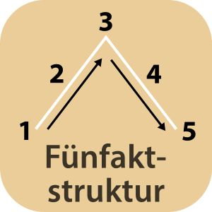

Fünfaktstruktur: Eine von dem deutschen Schriftsteller Gustav Freytag (1818 - 1895) vorgenommene Erweiterung von Aristoteles klassischer Dreiaktstruktur. Gustav Freytag beschreibt die ideale Dramenstruktur grafisch als Pyramide mit fünf Akten, wobei er den gesamten ersten Teil der Handlung bis zur Klimax als aufsteigende Handlung, den zweiten Teil als absteigende Handlung bezeichnet. Wie in der Dreiaktstruktur bildet die Exposition als erster Akt den Auftakt zur dann folgenden Handlung, indem die Hauptfigur und ihre Begleitumstände eingeführt werden. Außerdem entsteht ein erster Eindruck vom zentralen Konflikt der Geschichte. Im zweiten Akt, der Steigerung, nimmt die Handlung Fahrt auf. Verschiedene Erzählstränge, Figuren sowie deren Interessen und Konflikte werden eingeführt und miteinander verwoben. Insgesamt verschärft sich die Situation zunehmend. Im dritten Akt, dem Höhepunkt des Konflikts, wird die Hauptfigur schicksalhaft mit ihrem Kernkonflikt konfrontiert. Anhand ihrer Reaktion werden die Weichen für ihren Aufstieg oder Fall gestellt. Im vierten Akt, dem Fall oder der Umkehr, verzögert sich das Ende der Geschichte durch neue Umstände. Der fünfte Akt, die Katastrophe oder Verklärung, bildet das Ende der Geschichte in der sich abschließend offenbart, ob es zu einem tragischen oder glücklichen Ausgang kommt.
Die einzelnen Akte werden bei Freytag durch drei Schlüsselmomente, die jeweils das Ende eines Aktes und den Anfang des Folgenden bilden, miteinander verbunden. Das erregende Moment leitet von der Exposition in die Steigerung über und bringt die eigentliche Handlung in Gang. Das tragische Moment bildet den Übergang zwischen dem Höhepunkt und der Umkehr und läutet die absteigende Handlung ein. Am retardierenden Moment steigert sich die Spannung noch ein letztes Mal, bevor sie letztlich in der Katastrophe oder Verklärung ihre Auflösung erfährt.
